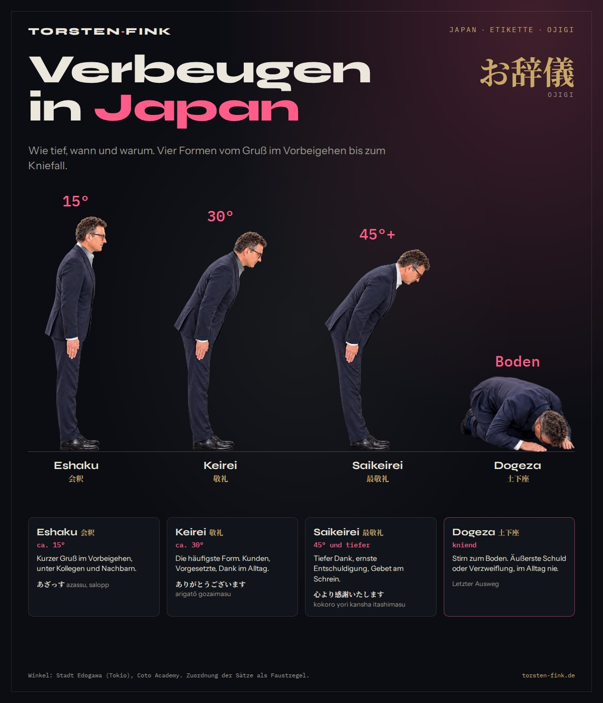
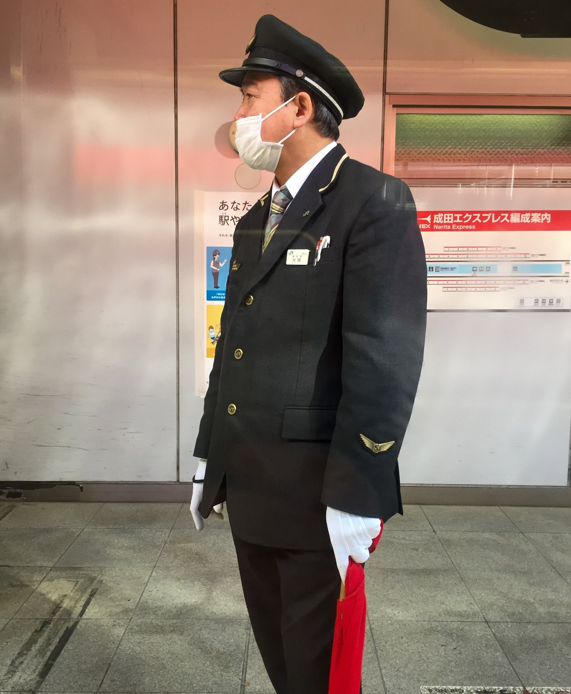
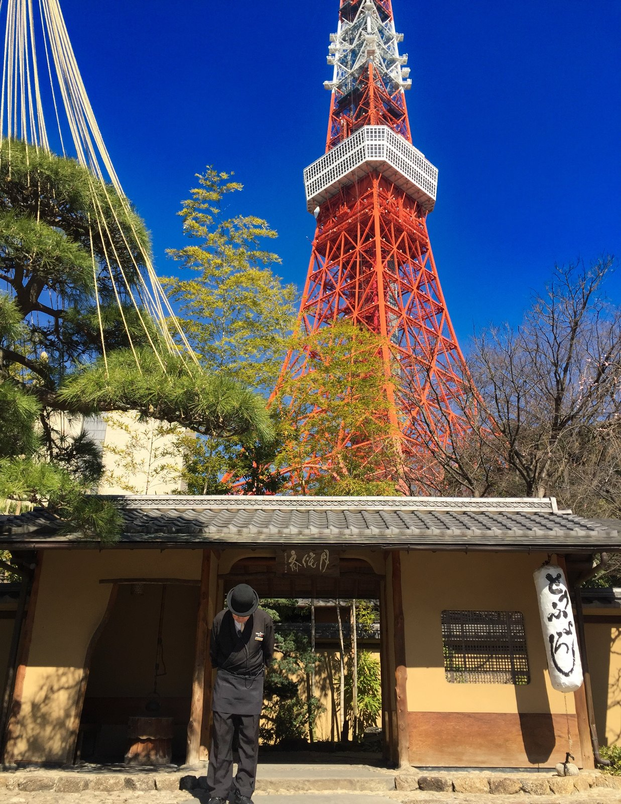

Zu Füßen des Tokyo Tower verbeugte sich der Gastgeber am Eingang des Tofuya Ukai. Tief und lange, ohne ein Wort. Seitdem wollte ich wissen, was die Verbeugung bedeutet.
Ojigi heißt die Verbeugung auf Japanisch. Sie grüßt, bedankt sich, entschuldigt sich. Die Tiefe zeigt, wie viel Respekt im Spiel ist. Die Stadt Edogawa in Tokio unterscheidet drei Stufen im Stehen, dazu kommt der Kniefall.

Die vier Formen auf einen Blick
| Form | Anlass | Winkel | Beispielsatz |
|---|---|---|---|
| Eshaku | Gruß im Vorbeigehen | ca. 15° | あざっす, azassu |
| Keirei | Kunden, Vorgesetzte, Dank im Alltag | ca. 30° | ありがとうございます |
| Saikeirei | Tiefer Dank, ernste Entschuldigung, Gebet | 45° und tiefer | 心より感謝いたします |
| Dogeza | Äußerste Schuld oder Verzweiflung | kniend | keiner, letzter Ausweg |
Die Winkel sind Richtwerte. Die Stadt Edogawa in Tokio nennt 15, 30 und 45 Grad, die Sprachschule Coto Academy gibt für Keirei 30 bis 45 und für Saikeirei 45 bis 70 Grad an. Welcher Satz zu welcher Verbeugung passt, ist eine Faustregel und in den Quellen nicht fest zugeordnet.
01Eshaku 会釈
- Winkelca. 15°
- Anlassim Vorbeigehen
Ein kurzes Neigen, etwa wenn man jemandem auf der Straße begegnet. Für gute Bekannte und Kollegen. Salopp dazu passt あざっす, azassu, die umgangssprachliche Kurzform von „arigatō gozaimasu“.
02Keirei 敬礼
- Winkelca. 30°
- AnlassKunden, Vorgesetzte
Die Verbeugung, die man in Japan am häufigsten sieht. Im Geschäftsleben, gegenüber Vorgesetzten, beim Vorstellungsgespräch. Dazu sagt man ありがとうございます, arigatō gozaimasu, oder noch etwas höflicher どうもありがとうございます, dōmo arigatō gozaimasu.

Das Verbeugen des Schaffners mit den weißen Handschuhen. Das ist eines der Bilder, die mir von Tokio geblieben sind.
03Saikeirei 最敬礼
- Winkel45° und tiefer
- Dauerca. 3 Sekunden und länger
- Anlasstiefer Dank, Entschuldigung, Gebet
Die tiefste Verbeugung im Stehen. Für einen großen Dank, eine ernste Entschuldigung, vor Mitgliedern des Kaiserhauses oder beim Gebet im Schrein und im Tempel. Sie dauert länger, je schwerer der Anlass. Dazu passen Sätze wie 誠にありがとうございます, makoto ni arigatō gozaimasu, oder 心より感謝いたします, kokoro yori kansha itashimasu, sinngemäß „von Herzen Dank“.

Der Gastgeber am Tofuya Ukai verbeugte sich tief und lange, mit offensichtlich tiefstem Respekt. Über ihm 333 Meter Stahl, vor mir eine tiefe Verbeugung.
04Dogeza 土下座
- Haltungkniend, Stirn zum Boden
- Anlassäußerste Schuld
Auf den Knien, die Stirn am Boden. Mit Dank hat das nichts zu tun. Dogeza gehört zu äußerster Schuld oder Verzweiflung und gilt als letzter Ausweg. Im Alltag kommt sie nicht vor.
Mehr Japan mit Geschichten statt Regeln: Tokio: Der Puls einer Welt, die niemals schläft und Kamakura: Wo die Shogun surften? Praktisch für unterwegs: Tokio zu Fuß, 8 Bahnhöfe.
Quellen & Recherche
Winkel und Anlässe habe ich bei japanischen und auf Japan spezialisierten Quellen nachgeschlagen, Stand Oktober 2026. Die Grafik habe ich selbst gesetzt, die Figuren sind Fotos von mir.